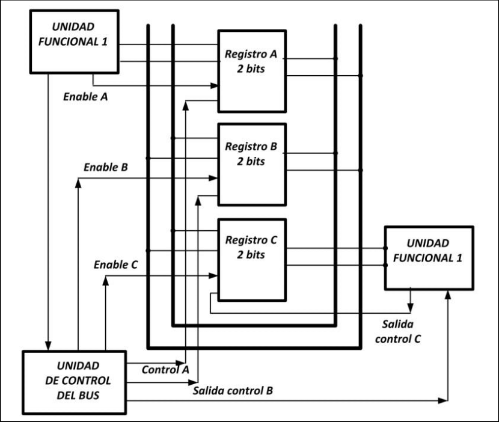

Unidad 2: Estructura y Funcionamiento del CPU
2.2 Estructura de Registros
Los registros del CPU se emplean para controlar las instrucciones en ejecución, manejar direccionamiento de memoria y propiciar la capacidad aritmética. Los registros vienen de tres tipos: datos, direcciones e índice, que tienen lugar en casi todos los aspectos de la operación del CPU.
El tamaño de un registro depende del CPU; los más simples tienen registros que aceptan 8 o 16 bits de datos y los más complejos tienen registros de 32, 48 o 64 bits.
2.2.1 Registros Visibles para el Usuario
Un registro visible al usuario es aquél que puede ser referenciado por medio del lenguaje máquina que ejecuta la CPU. Prácticamente todos los diseños contemporáneos de CPUs están provistos de varios registros visibles al usuario, en oposición a disponer de un único acumulador.
Clasificación de registros visibles:
- Uso General: Pueden ser asignados por el programador a diversas funciones
- Datos: Usados únicamente para contener datos
- Direcciones: Dedicados a un modo de direccionamiento particular
- Códigos de Condición: Contienen bits fijados por el hardware como resultado de operaciones
La cantidad de registros generales o especializados es una cuestión de diseño. No hay solución óptima, pero la tendencia parece ir hacia el uso de registros especializados. Parece óptimo entre 8 y 32 registros.
2.2.2 Registros de Control y de Estados
Registros de Control
Hay diversos registros de la CPU que se pueden emplear para controlar su funcionamiento. La mayoría de éstos, en la mayor parte de las máquinas, no son visibles al usuario. Algunos de ellos pueden ser visibles a instrucciones de máquina ejecutadas en un modo de control o de sistema operativo.
- Contador de Programa: Contiene la dirección de la siguiente instrucción
- Registro de Dirección: Se conecta directamente al bus de direcciones
- Registro de Instrucción: Almacena la instrucción captada
- Registro de Datos: Se conecta directamente al bus de datos
Registros de Estado
El registro de estado, también conocido como registro de bandera, palabra de estado del programa y registro de código de condición, se define como un conjunto de bits de bandera dentro de un procesador.
Las banderas indican cosas como desbordamiento, igualdad, signo y otros indicadores de estado útiles para la ejecución de instrucciones condicionales.
2.2.3 Ejemplos de Registros de CPU Reales
Tipos de registros en CPUs modernas:
1. Registros de Propósito General (GPRs)
Se utilizan para almacenar datos y realizar operaciones aritméticas y lógicas:
- x86: EAX, EBX, ECX, EDX
- ARM: R0, R1, R2, R3
2. Registro de Puntero de Pila
Almacena la dirección de memoria actual del tope de la pila:
- x86: ESP (Extended Stack Pointer)
- ARM: SP (Stack Pointer)
3. Registro de Contador de Programa
Almacena la dirección de la próxima instrucción a ejecutar:
- x86: EIP (Extended Instruction Pointer)
- ARM: PC (Program Counter)
4. Registro de Bandera/Estado
Almacena información sobre el estado y los resultados de las operaciones:
- x86: EFLAGS (Extended Flags Register)
- ARM: CPSR (Current Program Status Register)
2.3 El Ciclo de Instrucción
Ciclos de computadora
La búsqueda es el proceso de obtener instrucciones de un programa o un elemento de datos de la memoria. El término decodificar se refiere al proceso de traducir las instrucciones a señales que la computadora puede ejecutar. Ejecutar es el proceso de llevar a cabo los comandos. Almacenamiento en este contexto significa escribir el resultado a la memoria.
Hoy día la mayoría de las computadoras personales soportan un concepto llamado pipelining. Con pipelining los procesadores inician la búsqueda de una segunda instrucción antes de que se haya completado el ciclo de la computadora de la primera instrucción. Los procesadores que cuentan con pipelining habilitado son más rápidos en el procesamiento.
2.3.1 Ciclo Fetch-Decode-Execute
El encargado de ejecutar un programa en una computadora u otro sistema computacional es el CPU, lo realiza siguiendo el llamado ciclo Fetch Decode Execute, con este ciclo se ejecutan todas las tareas que una computadora puede realizar.
Etapas del ciclo:
- Traer la instrucción (Fetch): Se obtiene la instrucción desde memoria y se almacena en el registro del CPU
- Decodificar (Decode): Se identifica el modo de direccionamiento y la ubicación de los datos
- Carga de Parámetros: Se ejecuta la lectura, cargando todos los datos identificados
- Ejecutar (Execute): Se ejecuta la instrucción configurada
- Almacenar: Se almacena el resultado obtenido
- Actualizar PC: Se actualiza el registro Program Counter con la siguiente dirección
El ciclo expuesto es muy básico. Los sistemas de hoy en día son multitareas, lo cual conlleva a una alteración en este ciclo, además de las diferentes técnicas para reducir el tiempo de ejecución con temas de concurrencia y paralelismo en los procesadores modernos.
2.3.2 Segmentación de Instrucciones
La segmentación (en inglés pipelining, literalmente 'tubería' o 'cañería') es un método por el cual se consigue aumentar el rendimiento de algunos sistemas electrónicos digitales. Se usa principalmente en los microprocesadores.
Funcionamiento del Pipeline
El símil con la programación existe en que los cálculos deben ser registrados o sincronizados con el reloj cada cierto tiempo para que la ruta crítica (tramo con más carga o retardo computacional entre dos registros de reloj) se reduzca.
Una vez el canal (pipe) está lleno, después de una latencia inicial, los resultados de cada comando vienen uno tras otro cada flanco de reloj y sin latencia extra por estar encadenados dentro del mismo canal, maximizando la frecuencia de trabajo.

2.3.3 Conjunto de Instrucciones, Características y Funciones
Un conjunto de instrucciones o repertorio de instrucciones, juego de instrucciones o ISA (del inglés Instruction Set Architecture) es una especificación que detalla las instrucciones que una CPU de un ordenador puede entender y ejecutar.
Tipos de ISA:
- CISC (Complex Instruction Set Computer): Conjunto complejo de instrucciones
- RISC (Reduced Instruction Set Computer): Conjunto reducido de instrucciones
- SISC (Specific Instruction Set Computer): Conjunto específico de instrucciones
Se emplea para distinguir este conjunto de características de la microarquitectura, que son los elementos y técnicas que se emplean para implementar el conjunto de instrucciones. Procesadores con diferentes diseños internos pueden compartir un conjunto de instrucciones; por ejemplo el Intel Pentium y AMD Athlon implementan versiones casi idénticas del conjunto de instrucciones x86.
2.3.4 Modos de Direccionamiento
Los modos de direccionamiento son las diferentes maneras de especificar un operando dentro de una instrucción en lenguaje ensamblador. Un modo de direccionamiento especifica la forma de calcular la dirección de memoria efectiva de un operando.
Principales modos de direccionamiento:
1. Inmediato (Immediate)
El valor del operando se especifica directamente en la instrucción.
Ejemplo: ADD R1, #10 (suma el valor inmediato 10 al registro R1)
2. Directo (Direct)
La dirección de memoria del operando se especifica directamente en la instrucción.
Ejemplo: LOAD R2, [100] (carga el valor de la dirección 100 en R2)
3. Indirecto (Indirect)
La dirección de memoria del operando se obtiene indirectamente a través de un registro.
Ejemplo: LOAD R3, [R2] (carga el valor de la dirección apuntada por R2)
4. Basado en Registro (Register-based)
La dirección se calcula sumando un desplazamiento a un registro base.
Ejemplo: LOAD R4, [R5+10]
5. Indexado (Indexed)
La dirección se calcula sumando un desplazamiento a un registro índice.
Ejemplo: LOAD R6, [R7+R8]
6. Relativo (Relative)
Usado en instrucciones de salto. La dirección se calcula sumando un desplazamiento relativo.
Ejemplo: JUMP [PC+20]
2.4 Casos de Estudio de CPU Reales
En informática, los modos de direccionamiento son las diferentes maneras de especificar un operando dentro de una instrucción en lenguaje ensamblador. No existe una forma generalmente aceptada de nombrar a los distintos modos de direccionamiento.
Los distintos autores y fabricantes de equipos pueden dar nombres diferentes para el modo de hacer frente al mismo, o los mismos nombres, a los diferentes modos de direccionamiento. Además, un modo de direccionamiento que en una determinada arquitectura se trata como un modo de direccionamiento, puede representar la funcionalidad que en otra arquitectura está cubierta por dos o más modos de direccionamiento.